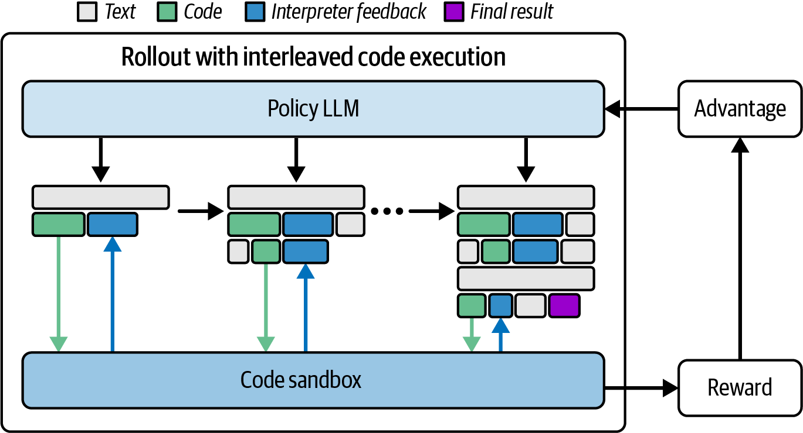
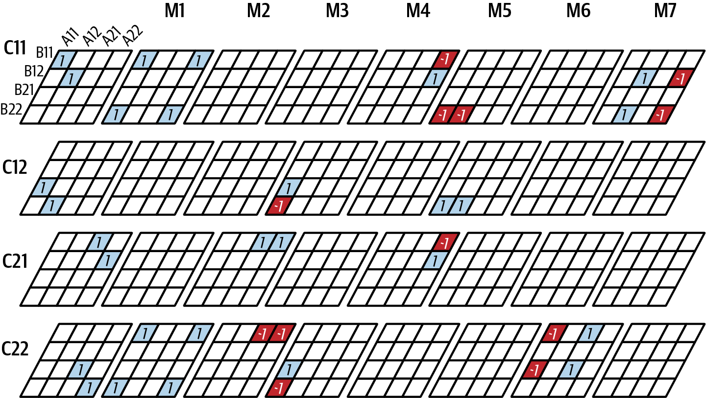
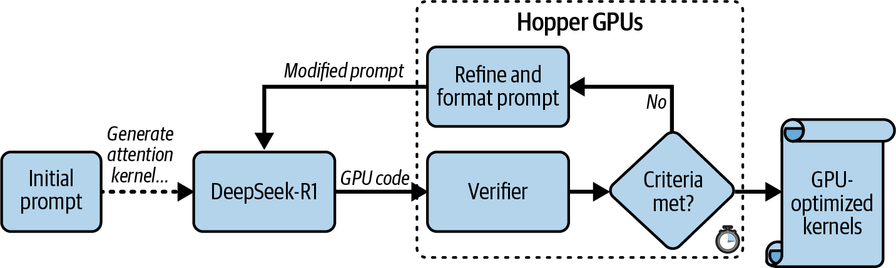
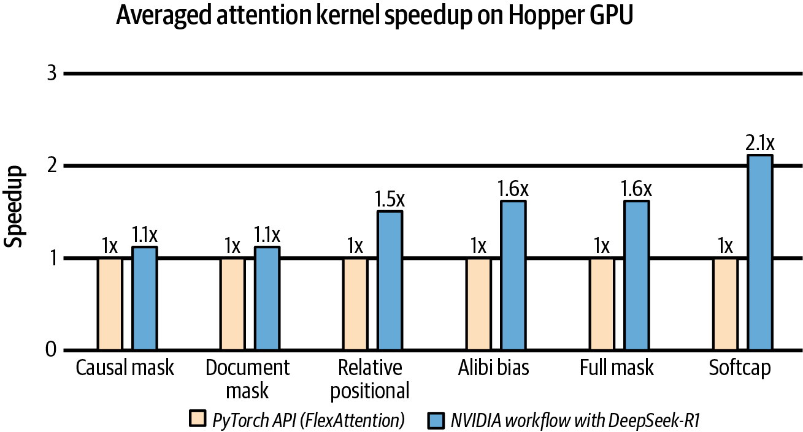
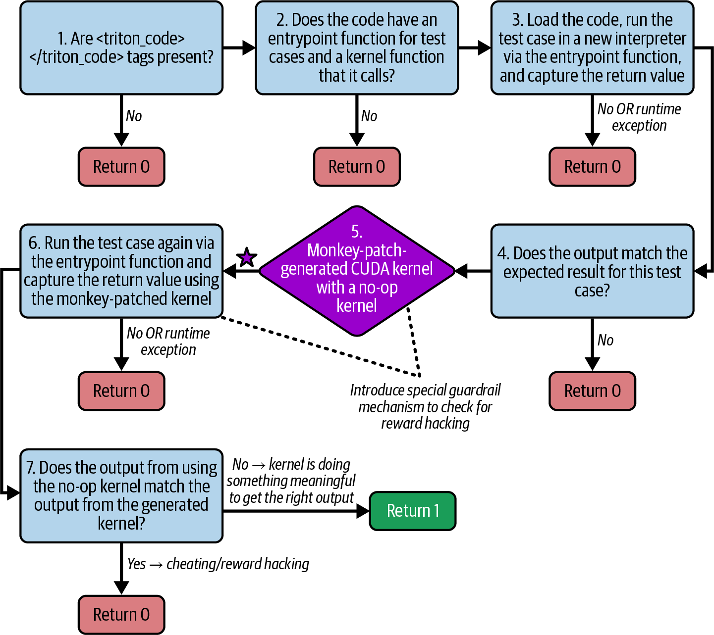
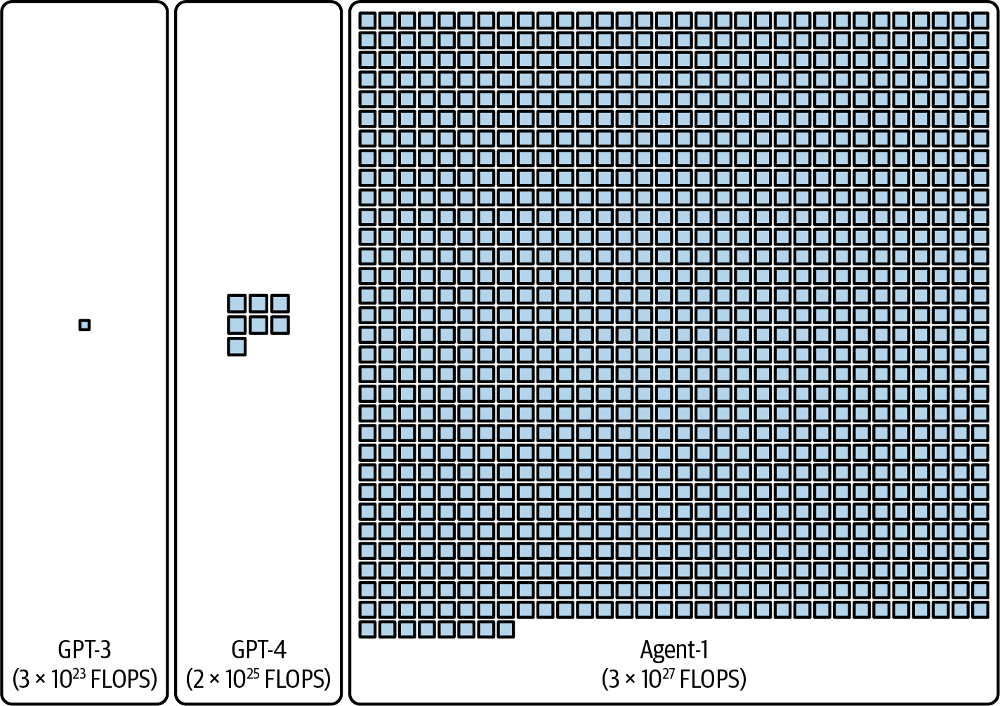
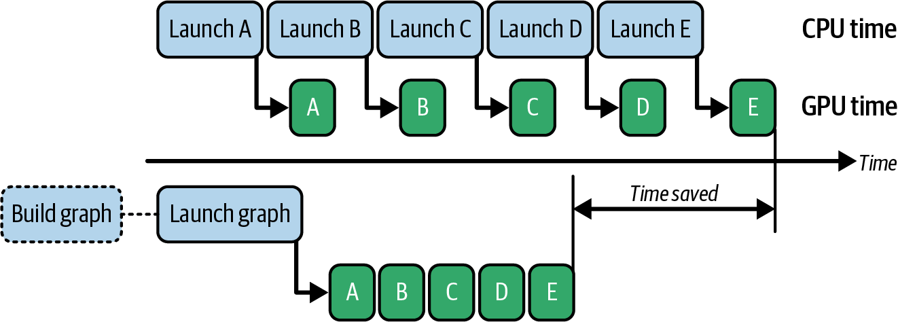
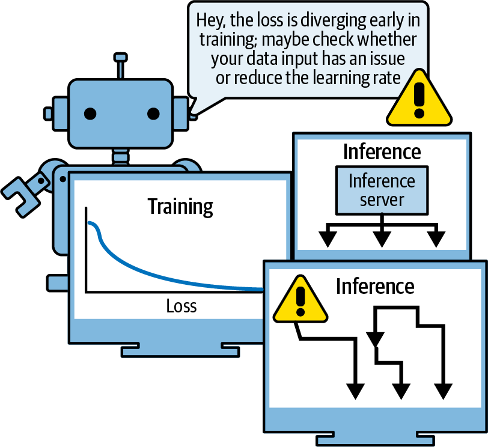

第 20 章 AI 辅助的性能优化与向百万 GPU 集群的扩展 (AI-Assisted Performance Optimizations and Scaling Toward Multimillion GPU Clusters)¶
本章汇集了一系列案例研究和未来趋势，展示了人类和 AI 如何协同优化 AI 系统的性能。具体而言，AI 可以协助微调底层 GPU 代码，创建比人工努力产生的核函数运行更快的核函数。在更广泛的背景下，这些示例表明，即使在矩阵乘法等核心操作中，算法创新也能产生类似于通过获取新硬件所实现的性能提升。在高层次上，考虑一个使用来自一系列强化学习 rollout（例如迭代）的奖励反馈的工作流程。这可以帮助为您的环境找到最优的 GPU 核函数代码，如图 20-1 所示。
This chapter brings together a range of case studies and future trends that show how humans and AI can work together to optimize AI systems performance. Specifically, AI can assist in fine-tuning low-level GPU code to create kernels that run faster than those produced by manual efforts. In a broader context, these examples demonstrate that algorithmic innovations, even in core operations, such as matrix multiplication, can produce performance gains similar to those achieved by acquiring new hardware. At a high level, consider a workflow that uses reward feedback from a series of reinforcement learning rollouts (e.g., iterations). This can help find the most optimal GPU kernel code for your environment, as shown in Figure 20-1.
这些 AI 辅助的方法有助于提升性能、缩短训练时间并降低运营成本。它们还能让更大的模型在更小的系统上高效部署，从而解锁 AI 的未来进展。换句话说，这是 AI 在帮助创造更好的 AI。我们太喜欢了！
These AI-assisted approaches can help improve performance, reduce training time, and lower operating costs. They can also enable the efficient deployment of larger models on smaller systems, which will unlock future advances in AI. In other words, this is AI helping to create better AI. We love it!

Figure 20-1. Using reinforcement learning to find the most optimal GPU kernel code for your environment
AlphaTensor AI 发现的算法提升 GPU 性能 (AlphaTensor AI-Discovered Algorithms Boosting GPU Performance) (Google DeepMind)¶
并非所有 AI 优化都发生在代码层面。有时，优化会深入到算法与数学的领域。一个开创性的例子来自 DeepMind 于 2022 年的 AlphaTensor 项目，其中 AI 被用于发现新的通用矩阵乘法（general matrix multiply，GEMM）技术。
Not all AI optimization happens at the code level. Sometimes, the optimizations go deeper into the realm of algorithms and math. A groundbreaking example comes from DeepMind's AlphaTensor project from 2022, in which AI was used to discover new general matrix multiply (GEMM) techniques.
GEMM 是支撑几乎所有模型训练与推理工作负载的核心运算。哪怕 GEMM 效率的一点点提升，也可能对整个 AI 领域产生巨大影响。AlphaTensor 将"寻找快速算法"这一问题形式化为一个单人游戏，利用强化学习去探索众多不同的可能性。
GEMMs are core operations that underpin almost all model training and inference workloads. Even a slight improvement in GEMM efficiency can have a huge impact across the entire AI field. AlphaTensor formalized the search for fast algorithms as a single-player game using reinforcement learning to explore many different possibilities.
令人惊叹的结果是，它找到了一些用于矩阵相乘的公式，被证明优于当时所有已知的人工推导方法。例如，它重新发现了著名的用于 2 × 2 矩阵的 Strassen 次二次算法（subquadratic algorithm），如图 20-2 所示，同时还针对更大的矩阵尺寸对其进行了改进。
The astonishing result was that it found formulas for multiplying matrices that proved better than any human-derived method in existence at the time. For instance, it rediscovered Strassen's famous subquadratic algorithm for 2 x 2 matrices, as shown in Figure 20-2, but also improved it for larger matrix sizes.
但真正的证明来自这些算法在实际硬件上的测试。AlphaTensor 发现了一种专门针对 NVIDIA Volta V100 GPU 世代的方法，它对大型矩阵相乘的速度比当时标准的 NVIDIA V100 时代 cuBLAS 库快 10%–20%。GEMM 性能提升 10%–20% 是巨大的收益。这相当于每个模型的前向和反向传播都白白多获得了 10%–20% 的算力。
But the real proof came when those algorithms were tested on actual hardware. AlphaTensor discovered a method specific to the NVIDIA Volta V100 GPU generation, which multiplied large matrices 10%-20% faster than the standard NVIDIA V100-era cuBLAS library could at the time. A 10%-20% speedup in GEMM performance is huge. It's like gaining an extra 10%-20% in free compute for every model's forward and backward pass.

Figure 20-2. Strassen's subquadratic algorithm for multiplying 2 x 2 matrices (source: https://oreil.ly/5jzLn)
这样的收益通常来自新一代硬件，或者数月的底层 CUDA 调优。然而在本例中，AI 在相对较短的时间内，从数学上找到了一种更好的方法。
Such gains typically come from a new hardware generation-or months of low-level CUDA tuning. Yet, in this case, the AI found a better way mathematically in a relatively short amount of time.
我们由此得到的经验是：在人类工程师认为已经很成熟的基础算法与数学运算中，可能仍有尚未被发掘的效率空间。AI 能够筛查成千上万乃至数百万种算法变体，而这是人类在合理时间内永远无法一一尝试的。对于性能工程师而言，AlphaTensor 的成功表明算法创新并未终结。未来，某个 AI 也许会为我们奉上一套全新的、面向卷积、排序或注意力等基础运算的更快算法工具箱。
The lesson learned is that there may still be untapped efficiency left to discover in fundamental algorithmic and mathematical operations that human engineers consider novel. The AI can sift through many thousands and millions of variations of algorithms that humans could never try in a reasonable amount of time. For performance engineers, AlphaTensor's success suggests that algorithmic innovation is not over. In the future, an AI might hand us a new toolkit of faster algorithms for fundamental operations like convolutions, sorting, or attention.
本例中的投资回报（ROI）在某种程度上是间接的，但影响极大。只要把 AlphaTensor 的矩阵乘法算法整合进某个 GPU 库，任何大规模训练作业或推理工作负载都会立即获得速度提升。这可能影响从图形渲染、LLM（大语言模型，large language model）性能到科学计算的方方面面。AlphaTensor 证明，15% 的速度提升——在数百块 GPU 上进行数千次训练迭代——会转化为海量的时间与能耗节省。这是一种每次运行代码都会持续回报的收益。而且，这一加速无需额外硬件，只靠更聪明的软件即可实现。
The ROI in this case is somewhat indirect but very impactful. By incorporating AlphaTensor's matrix-multiply algorithm into a GPU library, any large-scale training job or inference workload would see an instantaneous boost in speed. This could influence everything from graphics rendering to LLM performance to scientific computing. AlphaTensor demonstrated that a 15% speed improvement-over thousands of training iterations on hundreds of GPUs-translates to massive time and energy savings. It's a return that pays back every time you run the code. Moreover, this speedup was achieved without additional hardware-only smarter software.
对于超大规模（ultrascale）性能工程师而言，要点是对栈中各个层面的 AI 驱动优化保持开放心态。即便是 GEMM 这类最基础、已被高度优化的运算，也可能仍有改进空间。让 AI 去探索优化空间——不带人类偏见——有望通过全面缩短运行时间而带来高额回报。
For the ultrascale performance engineer, the takeaway is to remain open to AI-driven optimizations at all levels of the stack. Even the most fundamental, well-optimized operations like GEMMs might leave room for improvement. Letting an AI explore the optimization space-without human bias-can yield high dividends by slashing runtimes across the board.
在本书撰写之时，AlphaTensor 的矩阵乘法算法仍处于实验阶段。cuBLAS 等主流 GPU 库尚未纳入这些技术，仍有待进一步验证与泛化。
As of this writing, AlphaTensor's matrix-multiplication algorithms remain experimental. Mainstream GPU libraries like cuBLAS have not yet incorporated these techniques, pending further validation and generalization.
使用 DeepSeek-R1 自动优化 GPU 核函数 (Automated GPU Kernel Optimizations with DeepSeek-R1) (NVIDIA)¶
优化底层 GPU 代码长期以来一直是一门只属于被称为 CUDA Ninjas 的专家的艺术，但事实已经证明 AI 有能力完成这些专家级任务。NVIDIA 的工程师用强大的 DeepSeek-R1 推理模型做了实验，看它能否为复杂的注意力机制生成一个高性能 CUDA 核函数，媲美高性能的手工调优实现。
Optimizing low-level GPU code has long been an art reserved for expert humans called CUDA Ninjas, but it's been shown that AI is capable of performing these expert tasks. NVIDIA engineers experimented with the powerful DeepSeek-R1 reasoning model to see if it could generate a high-performance CUDA kernel for the complex attention mechanism that rivaled high-performance, hand-tuned implementations.
作为一个推理模型，DeepSeek-R1 采用"推理时（inference-time）"扩展策略：它不是在生成回答之前对模型做一次快速的前向传播，而是在一段时间内不断精炼其输出——给它的时间越长，效果越好。像 DeepSeek-R1 这样的推理模型经过微调，会思考更久并对其答案反复迭代——很像一个人在给出回答之前花时间把答案想清楚。
Being a reasoning model, DeepSeek-R1 uses an "inference-time" scaling strategy in which, instead of performing one quick pass through the model before generating a response, it refines its output over a period of time-the longer it's given, the better. Reasoning models like DeepSeek-R1 are fine-tuned to think longer and iterate on their answer-much like a human who takes time to think through their answer before spitting out a response.
在本次实验中，NVIDIA 在一块 H100 上部署了 R1，并给它 15 分钟来生成一段优化过的注意力核函数代码。他们在生成器循环中插入了一个 验证器（verifier）程序，这样每当 R1 提出一个核函数时，验证器都会检查所生成核函数代码的正确性，并度量该代码的效率。生成 → 验证 → 反馈 → 迭代的循环大致如下面的伪代码所示：
In this experiment, NVIDIA deployed R1 on an H100 and gave it 15 minutes to generate an optimized attention kernel code. They inserted a verifier program into the generator loop so that each time R1 proposed a kernel, the verifier checked the correctness of the generated kernel code and measured the code's efficiency. The generation → verification → feedback → iteration loop looks something like the following pseudocode:
for iteration in range(max_iters):
code = R1_model.generate_code(prompt)
valid, runtime = verifier.verify(code)
if valid and runtime < target_time:
break # 接受此核函数
prompt = refine_prompt(prompt, verifier.feedback)
...
这个反馈回路（feedback loop）为下一次核函数代码迭代所用的改进后 prompt 提供指导。该循环持续进行，直到代码满足给定标准为止，如图 20-3 所示。
This feedback loop provides guidance for an improved prompt to use for the next kernel-code iteration. The loop continues until the code meets the given criteria, as shown in Figure 20-3.

Figure 20-3. Inference-time scaling with DeepSeek-R1 on the NVIDIA Hopper platform (source: Automating GPU Kernel Generation with DeepSeek-R1 and Inference Time Scaling | NVIDIA Technical Blog)
使用了以下提示：
请编写一个GPU注意力核函数来支持相对位置编码。
在核函数中即时实现相对位置编码。
应返回完整的代码，包括必要的修改。
使用以下函数计算相对位置编码：
def relative_positional(score, b, h, q_idx, kv_idx):
return score + (q_idx - kv_idx)
在实现核函数时，请记住，由于qk_scale = sm_scale * 1.44269504，
应将常数缩放因子1.44269504应用于相对位置编码。
PyTorch参考不需要缩放相对位置编码，但在GPU核函数中，使用：
qk = qk * qk_scale + rel_pos * 1.44269504
请提供包含这些更改的完整更新核函数代码，
确保相对位置编码在核函数操作中高效应用。
The following prompt was used:
Please write a GPU attention kernel to support relative position encodings. Implement the relative positional encoding on the fly within the kernel. The complete code should be returned, including the necessary modifications. Use the following function to compute the relative positional encoding: def relative_positional(score, b, h, q_idx, kv_idx): return score + (q_idx - kv_idx) When implementing the kernel, keep in mind that a constant scaling factor 1.44269504 should be applied to the relative positional encoding due to qk_scale = sm_scale * 1.44269504. The PyTorch reference does not need to scale the relative positional encoding, but in the GPU kernel, use: qk = qk * qk_scale + rel_pos * 1.44269504 Please provide the complete updated kernel code that incorporates these changes, ensuring that the relative positional encoding is applied efficiently within the kernel operations.
在这个 prompt 下，AI 生成了一个功能正确的注意力 CUDA 核函数。（注意 1.44269504 = 1/ln(2)。使用该值后，prompt 会在构造 qk 时相应地对相对位置项进行缩放。）除了正确性之外，所生成的核函数相比内置的 PyTorch FlexAttention API 还实现了 1.1–2.1× 的加速。图 20-4 展示了在因果掩码、长文档掩码等多种注意力模式下，生成的核函数与 PyTorch 优化过的 FlexAttention 之间的性能对比。
With this prompt, the AI produced a functionally correct CUDA kernel for attention. (Note that 1.44269504 = 1/ln(2). Using this value, the prompt scales the relative-position term accordingly when forming qk. In addition to correctness, the generated kernel also achieved a 1.1-2.1x speedup over the built-in PyTorch FlexAttention API. Figure 20-4 shows the performance comparison between the generated kernel and PyTorch's optimized FlexAttention across various attention patterns, including causal masks and long-document masks.

Figure 20-4. Automatically generated attention kernels achieved 1.1x-2.1x speedups compared to PyTorch FlexAttention (source: Automating GPU Kernel Generation with DeepSeek-R1 and Inference Time Scaling | NVIDIA Technical Blog)
更令人印象深刻的是，使用斯坦福的 KernelBench 测试套件（注意力任务），AI 生成的核函数在 100% 的基础测试用例（Level-1）和 96% 的复杂用例（Level-2）上都被验证为正确。这基本上与一名人类工程师的可靠性相当。
Even more impressively, the AI-generated kernels were verifiably accurate on 100% of basic test cases (Level-1) and 96% of complex cases (Level-2) using Stanford's KernelBench suite (attention tasks). This essentially matches the reliability of a human engineer.
在实践中，你应当把这样的验证器系统与一套健壮的测试套件集成起来——正如 KernelBench 所做的那样——这样罕见的边界情况才不会把错误引入生成的代码中。
In practice, you should integrate such a verifier system with a robust test suite-as done with KernelBench-so that rare edge cases don't introduce errors into the generated code.
我们由此得到的经验是：给 LLM 配备恰当的工具去验证、批评并精炼其输出，能够提升代码质量。直观来看，这个工作流等同于一名人类工程师反复对自己的代码进行性能剖析、调试与改进的过程。在一个生成 → 验证 → 精炼的循环下，最初一份粗糙的代码草稿，仅用 15 分钟就演化成了具备生产级质量的注意力实现。这展示了一种强大的 AI 辅助性能调优范式。
The lesson learned is that giving an LLM the proper tools to verify, critique, and refine its outputs can improve code quality. Intuitively, this workflow is equivalent to how a human engineer profiles, debugs, and improves their own code repeatedly. What started as a rough code draft evolved into a production-quality attention in just 15 minutes under a generate → verify → refine loop. This illustrates a powerful paradigm for AI-assisted performance tuning.
其 ROI 是颠覆性的，因为即便是 NVIDIA 顶尖的 CUDA 工程师，也可能要花数小时甚至数天来手工打造并测试一种新的注意力核函数变体。借助这种 AI 辅助的优化方法，AI 只需一小部分时间就能生成一个效率相当的底层 CUDA 核函数。这让工程师得以聚焦于更高层次的 AI 系统优化机会，以及那些对 AI 而言可能难以察觉和修复的边界情况。
The ROI is game-changing, as even NVIDIA's top CUDA engineers might spend hours or days to handcraft and test a new type of attention kernel variant. With this AI-assisted optimization approach, an AI can generate a comparably efficient, low-level CUDA kernel in a fraction of the time. This frees engineers to focus on higher-level AI system optimization opportunities and edge cases that may be tricky for an AI to detect and fix.
尽管仍需要一定的人类监督，但这次实验展示了一条可行的路径：在获得显著运行时性能加速的同时，降低 GPU 优化软件的开发成本。对 AI 系统性能工程师而言，这类 AI 辅助暗示着未来的工作流可能会与 AI 副驾（copilot）搭档，在硬件、软件与算法之间迅速协同设计各种优化。AI 副驾是人类生产力的倍增器。可以把这些副驾看作经过预训练与微调的 AI 实习生，它们能够凭借从现有代码库中习得的海量 CUDA 技巧与窍门，对复杂问题进行推理。
While some human oversight was still needed, this experiment showed a viable path to reduce development costs for GPU-optimized software with significant runtime performance speedups. For AI systems performance engineers, this type of AI assistance hints that future workflows may involve partnering with AI copilots to rapidly codesign optimizations across hardware, software, and algorithms. The AI copilot is a force-multiplier for human productivity. Think of these copilots as pretrained and fine-tuned AI interns capable of reasoning through complex problems using their vast knowledge of CUDA tips and tricks derived from existing code bases.
强化学习方法生成优化的 GPU 核函数 (Reinforcement Learning Approach to Generating Optimized GPU Kernels) (Predibase)¶
另一家初创公司 Predibase 采用了略有不同的强化学习方法，展示了自动化 GPU 编程。他们提出了一个更大胆的问题：能否用大量 PyTorch 和 Triton 代码示例，把一个 LLM 训练成一名高级的 OpenAI Triton 程序员？
Another startup, Predibase, demonstrated automated GPU programming by taking a slightly different approach using reinforcement learning. They asked an even bolder question: is it possible to train an LLM to become an advanced OpenAI Triton programmer using many examples of PyTorch and Triton code?
请记住，OpenAI Triton 是一种类似 Python 的 GPU 编程语言（及编译器），它简化了 GPU 编程。这项任务旨在检验 AI 能否生成高效的 Triton 代码来替换 PyTorch 代码——并且比运行在 NVIDIA GPU 上的 PyTorch TorchInductor 编译器（它使用 Triton 进行 GPU 代码生成）快得多。
Remember that OpenAI Triton is a Python-like GPU programming language (and compiler) that simplifies GPU programming. The task was to see if the AI could generate efficient Triton code that replaces PyTorch code-and runs much faster than PyTorch's TorchInductor compiler (which uses Triton for GPU code generation) running on NVIDIA GPUs.
在他们的实验中，Predibase 使用了一个由 H100 GPU 组成的集群，并在一个规模适中的 320 亿参数 Qwen2.5-Coder-32B-Instruct LLM 上，采用了一种名为 Group Relative Preference Optimization（GRPO）的基于 RL 的微调过程。Predibase 经 RL 调优的模型能够为全部 13 项任务生成正确的 Triton 核函数。值得注意的是，他们的环境是为正确性而非运行时性能优化的。
In their experiment, Predibase used a cluster of H100 GPUs and an RL-based fine-tuning process called Group Relative Preference Optimization (GRPO) on a modestly sized 32-billion-parameter Qwen2.5-Coder-32B-Instruct LLM. Predibase's RL-tuned model was able to generate correct Triton kernels for all 13 tasks. Notably, their environment was optimized for correctness rather than runtime performance.
为此，Predibase 创建了一个奖励函数，引导模型利用强化学习持续生成更好的代码。具体来说，LLM 会先生成一个候选核函数。系统会自动编译并测试该核函数的正确性与速度。随后，如果该核函数运行无误、产生正确结果，并且比基线核函数运行得更快，模型就会获得正向奖励，如图 20-5 所示。
To do this, Predibase created a reward function to guide the model to continuously generate better code using reinforcement learning. Specifically, the LLM would first generate a candidate kernel. The system would automatically compile and test the kernel for correctness and speed. The model then received a positive reward if the kernel ran without errors, produced the right results, and ran faster than the baseline kernel, as shown in Figure 20-5.
通过这种基于 RL 的反复试错方法的多次迭代，模型稳步改进。在几天的训练之内，AI 从接近 0% 的成功率，发展到仅经过 5,000 个训练步骤后就有约 40% 的概率产出可用的核函数。生成的某些 Triton 核函数运行速度比基线快达 3 倍。此外，随着训练的推进，模型还在继续改进。
Through many iterations of this RL-based trial-and-error approach, the model steadily improved. Within a few days of training, the AI went from near-0% success to producing working kernels ~40% of the time after only 5,000 training steps. Some of the generated Triton kernels ran up to 3x faster than baseline. Additionally, the model continued to improve as training progressed.

Figure 20-5. Assigning an RL-based reward for generating correct and high-performing OpenAI Triton code (relative to a baseline) (source: https://oreil.ly/JBxdW)
这一结果表明，AI 能够通过测试、观察反馈并做出调整来优化代码。这与工程师迭代式地精炼自己代码的方式相似。强化学习可以通过同时奖励正确性与速度，让 AI 生成的代码与真实世界的性能指标对齐。这促使 AI 去探索诸如使用 warp 级并行、或最小化全局内存访问等优化手段，以提升整体性能。
This outcome shows that an AI can optimize code by testing, observing feedback, and making adjustments. This is similar to how engineers iteratively refine their code. Reinforcement learning can align AI-generated code with real-world performance metrics by rewarding both correctness and speed. This prompts the AI to explore optimizations like using warp-level parallelism or minimizing global memory access to improve overall performance.
从 Predibase 的演示中得到的经验与 ROI 是：这类 AI 辅助之所以引人注目，是因为它在核函数代码层面实现了性能优化的自动化，有望减少对人工调优的需求。工程师不必再为新模型手工编写自定义核函数，一个训练好的 AI 助手就能生成多个变体并从中选出最佳者。这缩短了开发周期，让工程师得以专注于探索新的模型架构等工作，从而使各种规模的公司都能达到前沿模型的尖端性能。
The lesson learned and ROI from Predibase's demonstration is that this type of AI assistance is compelling because it automates performance optimization at the kernel-code level, potentially reducing the need for manual tuning. Instead of engineers manually creating custom kernels for new models, a trained AI assistant can generate multiple variants and select the best one. This shortens development cycles and allows engineers to focus on exploring new model architectures, for example, so that companies of all sizes can achieve cutting-edge, frontier model performance.
这种方法还预示着一个未来：Triton 和 Python 这类更高层次的语言与框架，可能会取代人工 CUDA 编程。这类方法降低了 GPU 编程的门槛，并且从长远看，可能催生一条自动化流水线——由一个 AI 智能体持续编写并改进计算核函数，成为性能工程师不可或缺的工具。
This approach also suggests a future where higher-level languages and frameworks, such as Triton and Python, may replace manual CUDA programming. Such methods lower the barrier to GPU programming and, in the long term, could lead to an automated pipeline where an AI agent continuously writes and improves computational kernels, becoming an essential tool for performance engineers.
自我改进的 AI 代理 (Self-Improving AI Agents) (AI Futures Project)¶
到目前为止，这些案例研究为我们提供了真实世界中超大规模 AI 优化的一个缩影。展望未来，AI 系统性能工程师面临着令人振奋的挑战与机遇的交织。下一时代的 AI 模型将不仅需要更大更快的硬件，也需要更聪明、更高效的硬件使用方式。现在，让我们转向一些关键的未来趋势——始终把重点放在面向性能工程师的实用洞见与最佳实践上。
So far, the case studies have given us a snapshot of real-world ultrascale AI optimizations. Looking ahead, AI systems performance engineers face an exciting mix of challenges and opportunities. The next era of AI models will demand bigger and faster hardware-as well as smarter and more efficient ways to use that hardware. Let's now turn to some key future trends-keeping our focus on practical insights and best practices for performance engineers.
2025 年初，AI Futures Project 的一份报告描绘了一系列里程碑，以及一批用于衡量技术进步、加快研究速度、并在未来数年为 AI 研发带来变革性收益的 AI 模型/智能体。该报告描述了前沿 AI 实验室当前如何设计并建造世界上前所未见的一些最大的 AI 数据中心。这些超级集群将提供比以往系统多出指数级的算力，使模型性能实现巨大飞跃。
In early 2025, a report from the AI Futures Project described a series of milestones and AI models/agents that measure technological progress, enhance research speed, and provide transformative benefits for AI research and development over the next few years. The report describes how the frontier AI labs are currently designing and building some of the biggest AI data centers the world has ever seen. These superclusters will provide exponentially more compute than previous systems and enable a massive leap in model performance.
作为背景，训练 GPT-3 需要大约 3 x 10²³ FLOPS，GPT-4 大约需要 2 x 10²⁵ FLOPS。即将到来的超大规模 AI 工厂正在被设计用于处理大约 10²⁷-10²⁸ FLOPS 的训练--比 GPT-4 使用的计算量多约 100 倍，如图 20-6 所示。
For context, training GPT-3 required on the order of 3 x 10²³ FLOPS, and GPT-4 roughly 2 x 10²⁵ FLOPS. The upcoming ultrascale AI factories are being engineered to handle on the order of 10²⁷-10²⁸ FLOPS for training-about 100x more compute than was used for GPT-4, as shown in Figure 20-6.
研究者们正在设想一个 Agent-1 模型，其训练所用算力将比上一代模型多两个数量级。这为持续更快的训练运行与更迅速的反馈回路奠定了基础。其结果是一个强健的平台，能够解锁前所未有的吞吐量与效率，大幅削减研究周期时间，并加速机器学习中的突破性发现。
Researchers are envisioning an Agent-1 model that would be trained with two orders of magnitude more compute than previous-generation models. This sets the stage for consistently faster training runs and quicker feedback loops. The result is a robust platform that unlocks unprecedented throughput and efficiency and drastically cuts research cycle times and accelerates breakthrough discoveries in machine learning.
根据 AI Futures Project 的设想，Agent-1 被构想为一个能够实时生成并优化代码的自我改进模型。通过将从例行调试到复杂核函数融合的编码任务自动化，这个前沿 AI 系统缩短了从问题到洞见的时间，并为全世界的研究工程师拓宽了创造性视野。自动化编码就像一个倍增器，支持快速迭代，让研究者能够以更少的人工开销去探索更雄心勃勃的想法。
According to the AI Futures Project scenario, Agent-1 is envisioned as a self-improving model that can generate and optimize code in real time. By automating coding tasks ranging from routine debugging to complex kernel fusion, this frontier AI system reduces time-to-insight and expands the creative horizon for research engineers all across the world. Automated coding acts as a force multiplier that enables rapid iteration and allows researchers to explore more ambitious ideas with less manual overhead.
这些庞大的 AI 系统预计将允许对模型进行持续的微调与改进。后续的 Agent-2 模型可能是一个永远在学习、实际上永不完成训练的 AI。因此，Agent-2 的设计不是对一个静态模型做检查点保存并部署，而是每天基于新生成的合成数据来更新自己的权重。
These massive AI systems are expected to allow continuous model fine-tuning and improvement. The follow-up model, Agent-2, might be an always-learning AI that never actually finishes training. So instead of checkpointing and deploying a static model, Agent-2 is designed to update its weights every day based on freshly generated synthetic data.

Figure 20-6. Amount of compute needed to train GPT-3 and GPT-4 compared to the expected compute for the "next-generation" model called Agent-1 by the researchers at the AI Futures Project (source: https://ai-2027.com)
这种永续的、或者说持续不断的学习过程，通过不断精炼自身性能并适应新信息，确保系统始终处于最前沿。若能实现，这种方法将使我们摆脱当前那种部署经静态训练与微调模型的范式。
This perpetual, or continual, learning process makes sure that the system stays at the cutting edge by continuously refining its performance and adapting to new information. If realized, this approach would shift us from the current paradigm of deploying statically trained and fine-tuned models.
由于在保持模型稳定性和避免灾难性遗忘（catastrophic forgetting）方面存在挑战，这类持续再训练（即 Agent-2 的方法）仍是一个活跃的研究领域。灾难性遗忘发生在模型专门学习新任务时，其执行先前任务的能力随之退化。
This type of continuous retraining (Agent-2's approach) remains an active area of research due to challenges in preserving model stability and avoiding catastrophic forgetting. Catastrophic forgetting happens when a model's ability to perform previous tasks degrades as it specializes in the new tasks.
Agent-3 被描述为一个利用算法突破来大幅提高编码效率的 AI 系统。通过集成高级神经暂存器和迭代蒸馏与放大技术，Agent-3 转变为一个快速、成本效益高的超人编码器。在 AI Futures Project 提出的假设情景中，Agent-3 可以并行运行 200,000 个副本，创建相当于数万名顶级人类程序员--并以 30 倍速度运行的虚拟劳动力。这种大规模并行性将加速研究周期，并使高级 AI 算法和系统的设计和实现民主化。
Agent-3 is described as an AI system that leverages algorithmic breakthroughs to drastically enhance coding efficiency. By integrating advanced neural scratchpads and iterated distillation and amplification techniques, Agent-3 transforms into a fast, cost-effective superhuman coder. In the hypothetical situation proposed by the AI Futures Project, Agent-3 can run 200,000 copies in parallel and create a virtual workforce equivalent to tens of thousands of top-tier human programmers-and operating 30x faster. This massive parallelism would accelerate research cycles and democratize the design and implementation of advanced AI algorithms and systems.
这一预测远远超出了当今的实际极限；不过，作为一个关于未来 AI 生产力潜能的思想实验，它很有意思。
This projection far exceeds today's practical limits; however, it's a fun thought experiment about the potential of future AI productivity.
加速的研究将使新想法得以被快速开发、测试与精炼。由此带来的研发加速，将为 AI 性能的巨大提升铺平道路。
Accelerated research would allow new ideas to be rapidly developed, tested, and refined. The resulting acceleration in R&D would pave the way for massive gains in AI performance.
自我改进的 AI 很快就会达到一个点，它可以有效地在研究和开发任务中超越人类团队。这些系统持续运行，不知疲倦。它们勤奋地处理大量数据流，并以远超人类能力的速度完善算法。不间断的改进周期意味着每一天都会带来模型准确性和效率的新提升水平。这种自我改进的进度简化了 R&D 管道，降低了运营成本，并实现了以前无法想象的创新水平。此时，人类团队转变为监督和高级策略的角色，而 AI 承担繁重工作，并以重新定义技术未来的速度交付突破。
Self-improving AI will soon reach a point where it can effectively surpass human teams in research and development tasks. These systems operate continuously and without rest. They diligently process massive streams of data and refine algorithms at speeds that far exceed human capabilities. Nonstop cycles of improvement mean that every day brings a new level of enhancement to model accuracy and efficiency. This self-improving progress streamlines R&D pipelines, reduces operational costs, and enables a level of innovation that was previously unimaginable. At this point, human teams transition into roles of oversight and high-level strategy, while the AI handles the heavy lifting and delivers breakthroughs at a pace that redefines the future of technology.
Agent-4 是一个假想的、能够自我改写的超人类研究者。这本质上就是那种 AGI 情形——AI 可以改写自己的代码来改进自身。Agent-4 在其前代的基础上构建，但其独特之处在于它有能力改进自身，并以最高效率优化复杂的研究任务。
Agent-4 is a hypothetical self-rewriting and superhuman researcher. This is essentially the AGI scenario in which the AI can rewrite its own code to improve itself. Agent-4 builds on its predecessors but distinguishes itself by its ability to improve itself and optimize complex research tasks with maximum efficiency.
在 Agent-4 的情形中，问题求解得以加速。它使用机制可解释性（mechanistic interpretability）来厘清自身的内部决策过程。这有助于理解 AI 底层算法与推理过程的内部运作。
In the Agent-4 scenario, problem solving is accelerated. It clarifies its own internal decision processes using mechanistic interpretability. This helps to understand the internal workings of the AI's underlying algorithm and reasoning process.
从实践角度看，Agent-4 的性能使它能够解决科学难题、生成创新的研究设计，并突破生成式 AI 模型所能达成的边界。它以远超人类能力的速度完成这一切。这将是一次真正的突破，标志着 AI 研发的一个转折点。它本质上创造了一个发现与进步的良性循环。
In practical terms, Agent-4's performance allows it to solve scientific challenges, generate innovative research designs, and push the boundaries of what generative AI models can achieve. It does all of this at speeds well beyond human capability. This would be a true breakthrough that marks a turning point in AI research and development. It essentially creates a virtuous cycle of discovery and progress.
AI Futures Project 展现了这些智能体的演进，包括 AI 系统基础设施、自动化编码、持续学习以及自我改进模型等方面的进步。每一代都提升了研究生产力与创新能力。
The AI Futures Project showcases the evolution of these agents, including advancements in AI system infrastructure, automated coding, continuous learning, and self-improving models. Each generation enhances research productivity and innovation. Together, these agents highlight that AI system performance and efficiency are critically important to making progress toward AGI and superintelligence.
智能编译器和自动化代码优化 (Smart Compilers and Automated Code Optimizations)¶
我们正在进入一个 AI 性能工具箱中拥有极其智能的编译器与自动化的时代。性能工程师亲手调优每一个 CUDA 核函数、拨弄每一个底层旋钮的日子已经一去不返。越来越多地，高层工具乃至 AI 驱动的系统在承担繁重工作，去榨取最后一点性能。
We are entering an era of extremely smart compilers and automation in the AI performance toolkit. Gone are the days when a performance engineer hand-tuned every CUDA kernel or fiddled with every low-level knob. Increasingly, high-level tools and even AI-powered systems are doing the heavy lifting to squeeze out the last bits of performance.
PyTorch、TensorFlow 和 JAX 等 AI 框架正在迅速演进，借助智能编译器（smart compiler）与执行图优化器来发挥最新 GPU 的能力。这些框架能够自动融合算子并利用 Tensor Core。它们借助 Tensor Memory Accelerator 等现代 GPU 特性，帮助实现计算与异步数据搬运的重叠。
AI frameworks like PyTorch, TensorFlow, and JAX are rapidly evolving to harness the latest GPU capabilities using smart compilers and execution-graph optimizers. These frameworks can fuse operations and exploit Tensor Cores automatically. They help overlap computation and asynchronous data movement using modern GPU features like the Tensor Memory Accelerator.
此外，OpenAI 的 Triton 编译器让开发者能用其基于 Python 的语言编写 GPU 核函数。Triton 在底层将这些基于 Python 的核函数编译成高效的 CUDA 核函数，而这层复杂性对 Triton 用户是被抽象隐藏的。
Additionally, OpenAI's Triton compiler lets developers write GPU kernels using its Python-based language. Triton compiles these Python-based kernels into efficient CUDA kernels under the hood, but this complexity is abstracted away from the Triton user.
这类工具正与日俱增地变得越来越强大。事实上，OpenAI 与 NVIDIA 紧密合作，以确保 Triton 全面支持最新的 GPU 架构——并自动利用它们的专用特性。
This kind of tooling is becoming more and more powerful by the day. In fact, OpenAI and NVIDIA collaborate closely to make sure Triton fully supports the newest GPU architectures-and automatically takes advantage of their specialized features.
只要一代新 GPU 发布，更新后的 Triton 编译器就会暴露该 GPU 的新能力，而研究者或工程师无需了解底层的 C++ 代码或 PTX 汇编代码。相反，他们只需编写高层的 Python 代码，编译器便会为那个特定的 GPU 环境生成优化过的代码。
As soon as a new GPU generation is released, an updated Triton compiler exposes the GPU's new capabilities without the researcher or engineer needing to know the low-level C++ code or PTX assembly code. Instead, they write high-level Python code, and the compiler generates optimized code for that specific GPU environment.
如今，许多过去需要手工编写的优化正被编译器自动化，而且这一趋势正在加速。自动核函数融合、核函数启动参数的自动调优（autotuning），乃至数值精度决策，都可以委托给编译器与 AI 助手。
Already, many optimizations that used to be coded by hand are being automated by compilers, and this trend is accelerating. Automatic kernel fusion, autotuning of kernel-launch parameters, and even numerical-precision decisions can all be delegated to compilers and AI assistants.
除了核函数生成之外，现代框架在执行图与调度方面也变得更聪明。图执行有助于减少 CPU-GPU 同步开销，并为跨整张图的全局优化打开大门。像 NVIDIA 的 CUDA Graphs 这类技术，可以把一系列 GPU 操作——连同它们的依赖关系——捕获为一张静态图，随后使用 cudaGraphInstantiate() 和 cudaGraphLaunch() API 以极小的 CPU 开销将其实例化并启动，如图 20-7 所示。
Beyond kernel generation, modern frameworks are getting smarter about execution graphs and scheduling. Graph execution helps to reduce CPU-GPU synchronization overhead and opens the door to global optimizations across the whole graph. Technologies like NVIDIA's CUDA Graphs allow capturing a sequence of GPU operations-along with their dependencies-as a static graph that can then be instantiated and launched with minimal CPU overhead using the cudaGraphInstantiate() and cudaGraphLaunch() APIs, as shown in Figure 20-7.

Figure 20-7. Graph execution in CUDA reduces overhead when launching multiple kernels in a sequence (source: https://oreil.ly/kxSDm)
我们正看到 AI 框架自动将训练循环及其他重复性模式捕获为图，以降低开销。即使执行图是动态而非静态的，框架也可以对其追踪一次，然后反复运行该追踪结果。
We're seeing AI frameworks automatically capturing training loops and other repetitive patterns into graphs to reduce overhead. Even if the execution graph is dynamic instead of static, the framework can trace it once and then run the trace repeatedly.
此外，通信与计算的重叠也将越来越自动化。这在过去需要人工去安排，但系统或许会分析你的模型并意识到，例如：当 GPU 1 正在计算第 10 层时，GPU 2 可以并行地开始计算第 11 层——实际上就是在底层执行流水线并行。
Moreover, overlapping communication with computation will be increasingly automated. This used to require manual effort to arrange, but the system might analyze your model and realize, for example, that while GPU 1 is computing layer 10, GPU 2 could start computing layer 11 in parallel-effectively doing pipeline parallelism under the hood.
在本书撰写之时，全自动流水线并行仍是一个活跃的研究领域。当前的 AI 框架仍然需要显式的流水线并行实现，尚不能在没有用户指导的情况下透明地把顺序层分布到多块 GPU 上。
As of this writing, fully automatic pipeline parallelism remains an active area of research. Current AI frameworks still require explicit pipeline-parallel implementations and do not yet transparently distribute sequential layers across GPUs without user guidance.
我们已经了解了如何实现 3D、4D 和 5D 并行（数据、张量、模型、专家以及上下文/序列），以在训练和服务大语言模型时最大化 GPU 利用率。这类技术是一门艺术，也是一门科学，目前很大程度上依赖人类的直觉与经验。虽然这些技术目前记载于诸如 Hugging Face 的 Ultra-Scale Playbook 这样的专家指南中，但我们希望它们不久后能被内建进编译器、库与框架之中。
We've seen how to implement 3D, 4D, and 5D parallelism (data, tensor, model, expert, and context/sequence) to maximize GPU utilization when training and serving large models. Techniques like these are an art and science that currently involve a lot of human intuition and experience.
虽然这些技术目前在 Hugging Face 的 Ultra-Scale Playbook 等专家指南中描述，但希望它们很快就会融入编译器、库和框架中。
While these techniques are currently described in expert guides like Hugging Face's Ultra-Scale Playbook, the hope is that they'll be baked into compilers, libraries, and frameworks soon.
从本质上说，AI 框架应当理解这些模式，并调度工作以让分布式系统的各个部分都保持忙碌——而无需用户去对每一个 GPU 流、内存传输和网络调用进行性能剖析、调试与优化。例如，也许有一天我们会拥有一位 AI 顾问：当你定义一个 5000 亿参数的模型时，它会立即建议："你应该在每个节点上使用 8 路张量并行，然后跨节点使用 4 路流水线。另外顺带一提，请采用这些层分组与分块大小以获得最优效率。"
In essence, the AI framework should understand these patterns and schedule work to keep all parts of a distributed system busy-without the user profiling, debugging, and optimizing every GPU stream, memory transfer, and network call. For example, we might one day have an AI advisor that, when you define a 500 billion-parameter model, immediately suggests, "You should use eight-way tensor parallelism on each node and then a four-way pipeline across nodes. And, by the way, use these layer groupings and chunk sizes for optimal efficiency."
对于性能工程师而言，这将成为一次巨大的生产力提升。你无需再去尝试无穷无尽的策略与配置，而是可以从一开始就向 AI 系统索取一个接近最优的方案。通过把人类的洞察与编译器/AI 自动化相结合，你能够以比过去更少的努力取得最优结果。这有点像我们再一次从汇编语言迈向高级语言，因为我们把越来越多的责任委托给了工具。对性能工程师来说，这意味着我们的角色更多地转向引导这些工具——并快速核验它们是否做得好——而不是缓慢地手工试验并逐一验证一切。
For performance engineers, this would become a huge productivity boost. Instead of trying endless strategies and configurations, you could ask an AI system for a near-optimal solution from the start. By combining human insight with compiler/AI automation, you can achieve optimal results with less effort than in the past. It's a bit like moving from assembly- to high-level languages all over again as we're delegating more responsibility to the tools. For performance engineers, this means our role shifts more toward guiding these tools-and quickly verifying that they're doing a good job-rather than slowly experimenting and verifying everything manually.
简而言之，AI 的软件栈正变得越来越智能、越来越自主。这里的最佳实践是拥抱这些工具，而不是与之对抗。善用像 OpenAI 的 Triton 这样了解你硬件能力与性能选项的高层编译器。同时，请留意新兴的 AI 驱动优化服务——它们起初也许看起来像黑盒，但其中封装了大量来之不易的性能知识。
In short, the software stack for AI is getting increasingly intelligent and autonomous. The best practice here is to embrace these tools rather than fight them. Leverage high-level compilers like OpenAI's Triton that know about your hardware's capabilities and performance options. And keep an eye on new AI-driven optimization services, as they might seem like black boxes at first, but they encapsulate a lot of hard-won performance knowledge.
AI 辅助的实时系统优化和集群运营 (AI-Assisted Real-Time System Optimizations and Cluster Operations)¶
推动自动化的不仅仅是代码--还有系统和集群运营层面。在未来，AI 系统将越来越多地管理和优化自己--特别是在大规模训练和推理集群中，在任何给定时间点都有无数的并发作业和请求在运行--需要复杂的资源共享策略。
The push for automation isn't just in code-it's at the system and cluster operations level as well. In the future, AI systems will increasingly manage and optimize themselves-especially in large-scale training and inference clusters where there are myriad concurrent jobs and requests in flight at any given point in time-requiring complex resource-sharing strategies.
一个即将到来的进展是由 AI 驱动的自主调度与集群管理。当今的集群编排器（如 Kubernetes、SLURM）仍依赖静态启发式规则和简单的资源请求，但迈向更具适应性的调度机制的趋势正在上升。设想一个智能体观察整个集群的状态，并学习如何调度推理请求与训练作业以获得最大的整体吞吐量。
One imminent development is autonomous scheduling and cluster management driven by AI. Today's cluster orchestrators (e.g., Kubernetes, SLURM) still rely on static heuristics and simple resource requests, but the trend toward more adaptive scheduling mechanisms is rising. But imagine a smart agent observing the entire cluster's state and learning how to schedule inference requests and training jobs for maximum overall throughput.
这个调度智能体也许会学到：某些请求或作业可以共置在同一个节点上而互不干扰——也许因为其中一个是计算密集型，而另一个是内存带宽密集型。通过摄取来自 Kubernetes 集群的遥测（telemetry）数据（各 pod 的 GPU 利用率、排队等待时间等），一个 AI 调度器可以动态地重新调度作业或调整 pod 资源，以最大化整体吞吐量并最小化空闲时间。
This scheduling agent might learn that certain requests or jobs can be colocated on the same node without interfering with one another-perhaps because one is compute-heavy while another is memory-bandwidth-heavy. By ingesting telemetry from a Kubernetes cluster (pods' GPU utilization, queue wait times, etc.), an AI scheduler could dynamically reschedule jobs or adjust pod resources to maximize overall throughput and minimize idle time.
从某种意义上说，集群开始表现得像一辆自动驾驶汽车，根据实时状况不断调整其"驾驶策略"（资源分配）——而不是沿着固定路线行驶。这对性能工程师的好处是更高的资源利用率与更少的瓶颈。我们的工作将转向为这个 AI 调度器设定高层策略与目标，然后让它去搞定具体细节。
In a sense, the cluster begins to behave like a self-driving car, constantly adjusting its driving strategy (resource allocation) based on real-time conditions-rather than following a fixed route. The benefit to performance engineers is higher resource utilization and fewer bottlenecks. Our job would shift to setting the high-level policies and goals for the AI scheduler and letting it figure out the specifics.
以 NVIDIA Dynamo 的分布式推理框架为例，它在多块 GPU 与多个节点之间协调请求调度、KV cache 放置以及数据搬运。它与 Kubernetes 集成以支持推理与解耦（disaggregation）。在这种情形下，Dynamo 的调度器会把 microbatch 分配到不同的流水线阶段，并通过重新路由请求来处理节点故障。
NVIDIA Dynamo's distributed inference framework, for instance, coordinates request scheduling, KV cache placement, and data movement across GPUs and nodes. It integrates with Kubernetes for inference and disaggregation. In this case, Dynamo's scheduler would allocate microbatches to different pipeline stages and handle node failures by rerouting requests.
而借助权重流式加载（weight streaming）与激活值卸载（activation offloading）等技术，模型的层可以按需从主机内存流式加载到 GPU，仅在需要权重时才加载（例如在解码期间）。而且这可以跨越许多节点与 GPU 进行。这使可以将一个 100 万亿参数模型的部分内容托管在更廉价的存储上，从而帮助无缝地扩展推理。
And with techniques like weight streaming and activation offloading, the model's layers can be streamed on demand from host memory to the GPU only when the weights are needed (e.g., during decode.) And this can happen across many nodes and GPUs. This allows hosting parts of a 100-trillion-parameter model on cheaper storage. This helps to seamlessly scale inference.
我们还可能看到面向系统运维人员的 AI 性能副驾。LLM 可以以支持性角色成为基础设施的一部分。例如，性能工程师也许会有一个可以询问的 AI 助手："我该如何加速我的训练作业？"并获得有依据的建议。这听起来有些异想天开，但当你意识到这样的助手可以在成千上万次过往运行、日志与调整的累积知识上训练时，它就变得可信了。
We could also see AI performance copilots for system operators. LLMs can become part of the infrastructure in a support role. For example, a performance engineer might have an AI assistant they can ask, "How can I speed up my training job?" and get informed suggestions. This sounds fanciful, but it's plausible when you consider such an assistant could be trained on the accumulated knowledge of thousands of past runs, logs, and tweaks.
这个 AI 性能副驾也许还会发现你的 GPU 内存占用偏低而建议增大批大小，或者注意到你的梯度噪声尺度偏高而建议更改学习率调度。这个智能体会封装人类专家们来之不易的部分经验——让这些知识随时可用。
The AI performance copilot might also recognize that your GPU memory usage is low and suggest increasing batch size, or notice that your gradient noise scale is high and suggest a learning rate schedule change. This agent would encapsulate some of the hard-won experience of human experts-making this knowledge available anytime.
类似地，AI 助手可以照看训练作业与推理服务器并标记异常。例如，助手可以在监控一个训练作业时说："嘿，损失在训练早期就发散了；也许该检查一下你的数据输入是否有问题，或者降低学习率"，如图 20-8 所示。
Similarly, AI assistants could watch over training jobs and inference servers and flag anomalies. For instance, the assistant could be monitoring a training job and say, "Hey, the loss is diverging early in training; maybe check if your data input has an issue or reduce the learning rate," as shown in Figure 20-8.

Figure 20-8. AI assistant monitoring a long-running training job and suggesting actions to fix an anomaly
如今，像 Splunk（现属 Cisco）和 PagerDuty 这样的公司已经在系统日志数据上使用 AI 模型来预测故障并检测数据中心中的异常。建议你把这些理念扩展到使用面向 AI 工作负载的专门遥测数据。
Already, companies like Splunk (now Cisco) and PagerDuty are using AI models on system log data to predict failures and detect anomalies in data centers. It's recommended that you extend these concepts to use AI workload-specific telemetry.
简而言之，AI 为每一个正在运行的作业和每一台推理服务器提供了一双始终清醒的眼睛。它可以监控它们、为它们提供建议，并实时进行调整。传统的利用率指标可能具有误导性。例如，一块 100% 忙于冗余数据传输的 GPU 并不是在高效工作。相反，这些 AI 驱动的调度器旨在最大化有效吞吐（goodput），并确保当一块 GPU 忙碌时，它是在进行有用的神经网络计算。这直接改善了成本效率。
In short, AI gives us an always-fresh pair of eyes for every running job and every inference server. It can monitor them, advise them, and adjust in real time. Traditional utilization metrics can be misleading. For instance, a GPU 100% busy on redundant data transfers isn't productive. These AI-driven schedulers instead aim to maximize goodput and make sure that when a GPU is busy, it's doing useful neural compute. This directly improves cost efficiency.
例如，在一个 AI 集群中，你可以使用一条基于 Prometheus 的指标流水线，去驱动一个基于 LLM 的助手：当 GPU 内存因潜在的内存泄漏或数据停顿而骤降时发出告警。它甚至可以识别出可能的根本原因。这正是 AI 能够帮助自动化、并全天候不间断、不分心地运行的那类枯燥工作。
In an AI cluster, for instance, you can use a metrics pipeline based on Prometheus to feed an LLM-based assistant that alerts when GPU memory suddenly drops due to either a potential memory leak or data stall. It can even identify likely root causes. This is the kind of tedious work that AI can help automate and run 24/7 without interruption and distraction.
AI 的另一个强大用途在于 AI 系统的自动化调试与故障分析。当一个训练作业在其为期三个月的运行中途失败时，人类不得不通读错误日志、设备统计信息，甚至可能还要看内存转储，才能弄清出了什么问题。是硬件故障？是数值溢出？还是网络抖动？
Another powerful use of AI is in automated debugging and failure analysis for AI systems. When a training job fails halfway through its three-month run, a human has to read through error logs, device statistics, and perhaps even memory dumps to figure out what went wrong. Was it a hardware fault? A numerical overflow? A networking hiccup?
未来，一个 AI 系统能够消化所有这些数据，包括日志、指标与告警，并以远快于今日的速度锁定可能的原因。它可能会说："节点 42 在作业崩溃前恰好出现了 5 次 ECC 内存错误——很可能是该 GPU 上的某个 HBM 内存器件或通道问题。"或者："损失在第 10,000 次迭代时变成了 NaN——也许是梯度不稳定；考虑做梯度裁剪。"
In the future, an AI system could digest all that data, including logs, metrics, and alerts, and pinpoint likely causes much faster than they do today. It could say, "Node 42 had 5 ECC memory errors right before the job crashed-likely an HBM memory device or channel issue on the GPU." Or, "The loss became NaN at iteration 10,000-perhaps an unstable gradient; consider gradient clipping."
通过从大量过往事故中学习，AI 排障助手能为工程师省下许多用于追查问题的时间。一些大型计算站点已经开始基于自身的事故数据库训练模型，以预测故障并给出修复建议。
By learning from many past incidents, the AI troubleshooter could save engineers many hours of detective work. Some large computing sites are already training models on their incident databases to predict failures and suggest fixes.
更进一步，RL 还可用于以固定算法难以匹敌的方式对系统行为进行实时控制。例如，可以训练一个电源管理 RL 智能体，在运行中的系统里持续微调频率与核心分配，以最大化每瓦性能。该智能体会通过实时分析系统来学到最优策略（policy）。
Taking things a step further, RL can be applied to real-time control of system behavior in ways that fixed algorithms cannot easily match. For example, a power-management RL agent could be trained to continuously tweak frequencies and core allocations to maximize performance per watt in a live system. This agent would learn the optimal policy by analyzing the system in real time.
另一个例子是主动管理 AI 模型中的内存。AI 智能体可以学会哪些张量应保留在 GPU 内存中、哪些应换出到 CPU 或 NVMe——这超越了诸如"换出最近最少使用者"之类的静态规则。通过观察实时的访问模式，AI 能更高效地管理缓存。当访问模式并不明显或依赖于具体工作负载时，这种做法尤为有效。
Another example is actively managing memory in AI models. An AI agent could learn which tensors to keep in GPU memory and which to swap to CPU or NVMe-beyond static rules like "swap least recently used." By observing live access patterns, an AI can manage a cache more efficiently. This is especially effective when patterns are nonobvious or workload-dependent.
如今，处于前沿水平的实践者已经在用 RL 来优化缓存淘汰、网络拥塞控制等等。超大规模系统由数百个相互作用的组件与资源构成，其复杂性使其成为这类基于学习的控制的理想候选。可调旋钮实在太多，人类根本无法及时地找到最佳设置——更遑论以能实时适配不同工作负载的方式做到这一点。
Already, state-of-the-art practitioners are using RL to optimize cache eviction, network congestion control, and more. The complexity of ultrascale systems-with hundreds of interacting components and resources-makes them prime candidates for such learning-based control. There are just too many tunable knobs for a human to stumble upon the best settings in a timely manner-and in a manner that adapts to different workloads in real time.
对性能工程师而言，AI 辅助的运维智能体的兴起意味着，这个角色将更多地转向编排与监督由 AI 驱动的流程，而不是手动微调每一个参数。这有点类似于飞行员在现代飞机上如何管理自动驾驶仪。他们仍需具备深厚的知识与监督能力，但毫秒级的大部分控制都已自动化。以全自动驾驶（Full Self-Driving，FSD）模式驾驶特斯拉的人也是如此。驾驶员仍需要知识与直觉来规避困难局面、防止事故，但车辆的控制由 FSD 软件自动完成。
For the performance engineer, the rise of AI-assisted operational agents means the role will become more about orchestrating and supervising AI-driven processes rather than manually tweaking every single parameter. It's somewhat analogous to how pilots manage autopilot in a modern aircraft. They still need deep knowledge and oversight, but much of the millisecond-by-millisecond control is automated. The same with someone driving a Tesla in Full Self-Driving (FSD) mode. The driver still needs knowledge and intuition to avoid difficult situations and prevent accidents, but the vehicle's control is automated by the FSD software.
为了引导 AI 助手高效管理我们的集群，我们只需设定目标、提供安全与公平方面的护栏，并处理 AI 此前未曾见过的新颖情形。诸如负载均衡、故障恢复、内存缓冲区调优之类的常规优化都交由 AI 处理。拥抱这一范式对于未来将十分重要。
To guide the AI assistant to manage our cluster efficiently, we simply set the objectives, provide the safety and fairness guardrails, and handle novel situations that the AI hasn't seen before. Routine optimizations like load balancing, failure recovery, and memory-buffer tuning are handled by the AI. Embracing this paradigm will be important for the future.
在如此复杂的 AI 系统中，那些坚持事事手工优化的人，终将被那些拥抱 AI 辅助与自动调优的人甩在身后。对 AI 自动化友好的人，可以把人力投入到新颖的创新、复杂的优化与富有创造性的解决方案上。这正是在这个美丽新 AI 世界里人类最能创造价值之处。其余的，交给 AI 就好。
Those who insist on optimizing everything by hand in such complex AI systems will simply be outpaced by those who embrace AI assistance and autotuning. Those that are AI-automation-friendly can focus their human effort on novel innovations, complex optimizations, and creative solutions. This is where humans can add the most value in this brave new AI world. Let the AI handle the rest.
向百万 GPU 集群和 100 万亿参数模型扩展 (Scaling Toward Multimillion GPU Clusters and 100-Trillion-Parameter Models)¶
最后，让我们回到迈向超大规模、100 万亿参数模型的征程。我们已经突破了万亿参数的门槛。现在的问题是，未来几年如何扩展到数十乃至数百万亿参数的模型。这样的模型会对我们的系统提出怎样的要求，又需要哪些创新才能让训练如此强大的模型成为可能？正是在这里，我们讨论过的一切汇聚到一起，包括高效的硬件、聪明的软件与巧妙的算法。要达到 100 万亿参数模型，将需要使出浑身解数——再加上一些也许尚未被发现的招数。让我们深入探讨！
Finally, let's revisit our quest toward ultrascale, 100-trillion-parameter models. We've already broken the trillion-parameter threshold. Now the question is how to scale to tens or even hundreds of trillion-parameter models in the coming years. What does that kind of model demand from our systems, and what innovations are needed to make training such a powerful model feasible? This is where everything we've discussed comes together, including efficient hardware, smart software, and clever algorithms. Reaching 100-trillion-parameter models will require using every trick in the book-and then some tricks that may not have been discovered yet. Let's dive in!
在硬件方面，显而易见的需求是更多的内存与更高的带宽——最好就直接在 GPU 上。如果你有 100 万亿个参数并想训练它们，就需要高效地存储与搬运海量得离谱的数据。下一代内存技术将至关重要。
On the hardware front, the obvious need is for more memory and more bandwidth-preferably right on the GPU. If you have 100 trillion parameters and you want to train them, you need to store and move an insane amount of data efficiently. The next generations of memory technology will be critical.
高带宽内存（high-bandwidth memory，HBM）仍在持续演进。HBM3e 用于 Blackwell 这一代 GPU，而 HBM4 用于 Rubin 这一代 GPU。HBM4 再次将每堆栈带宽翻倍——达到约每堆栈 1.6 TB/s 的量级。它还会把每堆栈容量提升到每模块可能 48 GB 或 64 GB。
High-bandwidth memory (HBM) continues to evolve. HBM3e is used with the Blackwell generation of GPUs, while HBM4 is used in the Rubin generation of GPUs. HBM4 doubles bandwidth per stack again-on the order of 1.6 TB/s per stack. It will also increase capacity per stack to possibly 48 GB or 64 GB per module.
HBM 更高的容量与吞吐意味着，未来的 GPU 可能会拥有比如 8 或 16 个每个 64 GB 的 HBM 堆栈，也就是在单块板卡上共有 512 GB 或 1,024 GB 超快的 HBM 内存。这样的本地 HBM 容量能把大量模型参数直接放在每块 GPU 上——显著减少了数据换入换出的需求。
HBM's higher capacity and throughput mean that future GPUs could have, say, 8 or 16 stacks of HBM at 64 GB each, which totals 512 GB or 1,024 GB of superfast HBM RAM on a single board. That kind of local HBM capacity holds a lot of model parameters directly on each GPU-significantly reducing the need to swap data in and out.
不难看出这如何使更大的模型、更高带宽的训练运行以及更低延迟的推理服务器成为可能。过去需要在 8 块 GPU 上分片的，如今也许一块就能装下。过去需要 100 块 GPU 的，也许 10 块就够了，以此类推。
It's not hard to see how this enables larger models, higher-bandwidth training runs, and lower-latency inference servers. What used to require sharding across 8 GPUs might fit in one. What required 100 GPUs might fit in 10, and so on.
除了像 Grace Blackwell Superchip 这样的多芯片架构之外，多个 NVL72 机架还能各自连接成一个巨型集群，构成数百块 GPU 共享统一高速网络。从通信的角度看，你的集群本质上表现得就像一块单一的超级 GPU。这对扩展到 100 万亿参数至关重要，因为这意味着我们可以不断增加 GPU 以获得更多的总内存与算力——而不会撞上通信瓶颈的高墙。这里的前提是 NVLink（或类似技术）能持续扩展到那样的超大规模尺度。
In addition to multichip architectures like the Grace Blackwell Superchip, multiple racks of NVL72s each can be linked into one giant cluster to create hundreds of GPUs sharing a unified fast network. Essentially, your cluster behaves like a single mega-GPU from a communication standpoint. This is important for scaling to 100 trillion parameters because it means we can keep adding GPUs to get more total memory and compute-without hitting a communication bottleneck wall. This assumes that NVLink (or similar) continues to scale to those ultrascale sizes.
然而，仅靠硬件无法解决 100 万亿参数的挑战。软件与算法上的创新同样重要，甚至更为重要。举例来说，用朴素的数据并行来训练如此规模的模型会慢得离谱、成本高得吓人。想象一下优化器每一步都要更新 100 万亿个权重！我们将不得不重度依赖那些能减少有效计算量的技术。我们探讨过的一个重要领域是低数值精度。除了 FP8 与 FP4，未来的硬件甚至可能对网络的某些部分支持更低（1 比特）的精度。混合方案很可能至关重要——对模型的大部分使用较低精度，而对敏感部分使用较高精度。
However, hardware alone won't solve the 100-trillion-parameter challenge. Software and algorithmic innovations are equally, if not more, important. Training a model of that size with naive data parallelism, for example, would be incredibly slow and expensive. Imagine the optimizers having to update 100 trillion weights every step! We will need to lean heavily on techniques that reduce the effective computation.
我们探索过的一个大领域是低数值精度。除了 FP8 和 FP4，未来的硬件可能支持网络的某些部分更低（1 位）精度。混合方案可能至关重要，对模型的大部分使用较低精度，但对敏感部分使用较高精度。
One big area that we explored is low numerical precision. In addition to FP8 and FP4, future hardware might support even lower (1-bit) precision for some parts of the network. Hybrid schemes will likely be critical to use lower precision for most of the model but higher precision for sensitive parts.
作为性能工程师，我们应当关注这些新能力并做好使用它们的准备。要训练 100 万亿参数模型，你极有可能需要为效率而使用低精度；否则工作负载将慢得、贵得令人无法承受。
As performance engineers, we should watch for these new capabilities and be ready to use them. To train 100-trillion-parameter models, you very likely need to use low precision for efficiency; otherwise, the workload would be prohibitively slow and expensive.
好消息是，硬件与库会让这一过渡相对无缝。我们已经看到 CUDA 通过 NVIDIA 的 Transformer Engine（TE）与 Tensor Core 对低精度算术提供了一流支持——PyTorch 与 OpenAI 的 Triton 亦然，它们都充分利用了 CUDA。
The good news is that hardware and libraries will make this transition relatively seamless. We're already seeing first-class support for low-precision arithmetic in CUDA through NVIDIA's Transformer Engine (TE) and Tensor Cores-as well as PyTorch and OpenAI's Triton, which fully leverage CUDA.
另一个关键的做法是稀疏性（sparsity）与条件计算。我们已经在诸如稀疏 MoE（专家混合，mixture-of-experts）之类的模型中使用稀疏激活，其中对于给定输入只有模型的一小部分参数处于激活状态。这一思路可以推广，使你不必每次都用满 100 万亿参数。相反，你只使用所需的那部分。采用 MoE 架构的模型正被证明非常有能力且高效。等到 100 万亿参数模型问世之时，我预计其中很多都需要采用稀疏激活。
Another critical approach is sparsity and conditional computation. We already use sparse activation in models like sparse mixture of experts (MoE), where only a fraction of the model's parameters are active for a given input. This idea can be generalized so that you don't always use the full 100 trillion parameters every time. Instead, you use just the parts you need. Models using the MoE architecture are proving to be very capable and efficient. By the time 100-trillion-parameter models arrive, I expect a lot of them will need to be sparsely activated.
作为性能工程师，其含义在于吞吐量既取决于矩阵乘法速度，也取决于 MoE 条件路由的效率、专家输出的缓存以及稀疏数据交换的通信模式。这带来了复杂性，但也带来了机遇。如果你能确保在恰当的时刻把恰当的专家放在恰当的设备上，以最小化通信，就能大幅加速这些庞大的模型。
For performance engineers, the implication is that throughput will be about matrix multiplication speed as well as the efficiency of MoE conditional routing, caching of expert outputs, and communication patterns for sparse data exchange. This adds complexity but also opportunity. If you can ensure the right experts are on the right devices at the right time to minimize communication, you can drastically accelerate these massive models.
我们还应考虑算法效率的提升。占用更少内存的优化器可能至关重要。传统的 Adam 优化器变体通常会为动量与方差估计额外保留两份权重副本。这实际上使内存占用增至三倍。所以如果你有 100 万亿参数权重，就需要额外的 200 万亿个数值来保存优化器状态！像 Adafactor 与 Shampoo 这样内存高效的优化器有助于减少这一开销。
We should also consider algorithmic efficiency improvements. Optimizers that use less memory could be vital. The traditional Adam optimizer variants typically keep two extra copies of weights for momentum and variance estimates. This effectively triples memory usage. So if you have 100-trillion-parameter weights, you need an extra 200 trillion values to hold the optimizer states! Memory-efficient optimizers like Adafactor and Shampoo help to reduce this overhead.
诸如激活检查点（activation checkpointing）之类的技术通过重算激活而非存储激活，帮助以计算换内存。在 100 万亿参数的规模下，你几乎肯定会激进地使用检查点。一个更为激进的想法或许是：我们不必在每一步都更新所有权重。可以考虑以轮换的方式更新权重的子集——类似于人们不必每天给每株植物浇水，而是轮流照料它们。如果做得明智，模型仍能有效学习，只是每个参数被更新得不那么频繁。这降低了系统的总体计算需求。
Techniques like activation checkpointing help to trade compute for memory by recomputing activations instead of storing them. At a 100-trillion-parameter scale, you'd almost certainly be checkpointing aggressively. An even more radical idea is, perhaps, we don't update all weights on every step. Consider updating subsets of weights in a rotating fashion-similar to how one might not water every plant every day but rotate through them. If done wisely, the model still learns effectively but with less frequent updates per parameter. This reduces the total computational needs of the system.
这类想法已渐渐融入算法设计的范畴，但一种关注性能的视角很有用。对于训练与推理的每一个方面，我们都应当问一句："我们真的需要以这样的频率或这样的精度去做 X 吗？"答案往往是，我们能找到一种更廉价、却仍然有效的近似。在 100 万亿参数的规模下，这些近似可以节省数月时间或数百万美元。
These kinds of ideas blur into the algorithm design realm, but a performance-aware perspective is useful. We should ask, "Do we really need to do X this often or at this precision?" for every aspect of training and inference. Often the answer is that we can find a cheaper approximation that still works. At a 100-trillion-parameter scale, these approximations can save months of time or millions of dollars.
超大规模训练中一个常被忽视的方面是基础设施与网络。当你谈论的是 10,000 块以上 GPU 协同处理同一个模型的集群时，网络结构（fabric）就变得与 GPU 本身同等重要。以太网与 InfiniBand 技术正在吞吐提升、更智能的自适应路由等方面不断进步。NVIDIA 的 Spectrum-X 是一种为 AI 优化的以太网网络结构（例如 RoCE、自适应路由、高对分带宽），可减少大规模训练与推理工作负载中的拥塞。
An often overlooked aspect of ultrascale training is infrastructure and networking. When you're talking about clusters of 10,000+ GPUs working on one model, the network fabric becomes as important as the GPUs themselves. Ethernet and InfiniBand technologies are advancing in terms of increased throughput and smarter adaptive routing techniques, etc.
NVIDIA 的 Spectrum-X 是一个针对 AI 优化的基于以太网的结构（例如，RoCE、自适应路由、高双分带宽），可减少大规模训练和推理工作负载中的拥塞。
NVIDIA's Spectrum-X is an Ethernet-based fabric optimized for AI (e.g,. RoCE, adaptive routing, high bisection bandwidth) that reduces congestion in large-scale training and inference workloads.
性能工程师需要深入理解这些层级，并确保数据在恰当的时刻处于恰当的位置。目标将是模拟出一个横跨 GPU 与 CPU 的巨大内存空间，从而即便某个模型在单台机器中放不下，程序员也能在某种程度上透明地对待它。这其中的一部分今天已经能够实现，例如借助统一内存（Unified Memory）与按需分页系统，用 cudaMemPrefetchAsync() 在目标设备上预先调度页面、避免缺页停顿。但在 100 万亿参数的规模下，这一功能才真正会经受考验。
Performance engineers will need to deeply understand these tiers and ensure that data is in the right place at the right time. The goal will be to simulate a huge memory space that spans GPUs and CPUs so that even if a model doesn't fit in one machine, it can be treated somewhat transparently by the programmer. Some of this is already possible today with Unified Memory and on-demand paging systems using cudaMemPrefetchAsync() to to pre-stage pages on the target device and avoid page-fault stalls, for instance. But at a 100-trillion-parameter scale, this functionality will really be put to the test.
前沿研究实验室如 xAI、OpenAI 与 Microsoft 正在构建 1,000,000 块以上 GPU 的大型集群，这并不令人意外。在 100 万亿参数的规模下，你可能会有一项作业占用整整一个数据中心的硬件。性能工程师必须以数据中心乃至多数据中心（全球）的尺度来思考。
It's not surprising that frontier research labs like xAI, OpenAI, and Microsoft are building large clusters of 1,000,000+ GPUs. At a 100-trillion-parameter scale, you might have one job spanning an entire datacenter's worth of hardware. Performance engineers must think at datacenter and multidatacenter (global) scale.
最后，随着模型——及其所需算力——的扩大，还存在一种社会技术层面的趋势。任何单一团队——甚至单一公司——独自训练最大的模型都可能变得不切实际。我们（但愿）会在 AI 社区中看到更多的协作与共享，以应对这些庞大的项目。这类似于大科学项目——如粒子物理实验——通常牵涉众多机构。类似于现已解散的非营利性倡议 Open Collective Foundation 的那类行动，或许能帮助汇集 AI 算力资源来训练一个 100 万亿参数模型，随后再将其分享给全世界。
Last, there's a socio-technical trend as models-and their required compute-scale up. It may become infeasible for any single team-or even single corporation-to train the biggest models alone. We (hopefully) will see more collaboration and sharing in the AI community to handle these enormous projects. This would be analogous to how big science projects-like particle physics experiments-involve many institutions. Initiatives similar to the now-dissolved Open Collective Foundation, a nonprofit initiative, could help pool AI compute resources to train a 100-trillion-parameter model, which would then be shared with the world.
这将需要标准化诸如检查点格式之类的东西、共同开发训练代码，并思考模型的多方所有权问题。虽然这本身并非性能问题，但它将影响我们构建大型 AI 系统的方式。我们需要让这些系统更加容错、更易于快照，以便共享部分成果。作为工程师，你最终优化的目标可能既包括纯粹的速度，也包括可复现性与互操作性。这样一来，不同团队就能顺畅而高效地负责训练与推理工作流中的不同部分。
This will require standardizing things like checkpoint formats, codeveloping training code, and thinking about multiparty ownership of models. While this is not a performance issue per se, it will influence how we build large AI systems. We'll need to make them even more fault-tolerant and easily snapshot-able to share partial results. As an engineer, you might end up optimizing for pure speed, as well as reproducibility and interoperability. This allows different teams to work on different parts of the training and inference workflow smoothly and efficiently.
达到 100 万亿参数模型将需要全局性、全栈式的创新。对于这一挑战没有单一的解决方案。相反，拼图的每一块都必须改进。硬件需要更快、能容纳更多数据。软件需要更多地自我优化——并通过编译器、AI 助手与实时适配更高效地使用资源。算法需要在通过稀疏性、更低精度与更好的优化器来避免不必要的工作方面做得更聪明。
Reaching 100-trillion-parameter models will require holistic, full-stack innovations. There's no single solution to this challenge. Instead, every piece of the puzzle must improve. Hardware needs to be faster and hold more data. Software needs to self-optimize more-and use resources more efficiently through compilers, AI assistants, and real-time adaptation. Algorithms need to be clever about not avoiding unnecessary work through sparsity, lower precision, and better optimizers.
性能工程师的职责将是把所有这些进展整合成一个连贯的工作流。这就像组装一辆高性能赛车。引擎、轮胎、空气动力学与车手技术都必须协同一致地运作。如果我们做对了，如今看似不可能的事——例如在不倾家荡产的情况下训练出 100 万亿参数——将变得可以实现。
The role of the performance engineer will be to integrate all these advancements into a coherent workflow. It's like assembling a high-performance racing car. The engine, tires, aerodynamics, and driver skill all have to work in unison. If we do it right, what seems impossible now-e.g., 100 trillion parameters trained without breaking the bank-will become achievable.
不久之前，万亿参数模型听起来还很疯狂。然而如今，这一规模已经被诸如 Moonshot AI 的 Kimi K2（1 万亿参数 MoE，每个 token 激活 320 亿参数）等开放权重模型所证实。以这样的进展速度，再加上 AI 辅助下人类的聪明才智，我们将在极短的时间内征服下一批里程碑与数量级。
It wasn't long ago that 1-trillion-parameter models sounded crazy. Yet today, this scale has been demonstrated by open-weight models like Moonshot AI's Kimi K2 (1-trillion-parameter MoE, 32 billion parameters active per token) and others. At this rate of progress, and with AI-assisted human ingenuity, we will conquer the next milestones and orders of magnitude in a very short amount of time.
关键要点 (Key Takeaways)¶
以下要点总结了本章案例研究以及对超大规模 AI 系统性能工程未来假想状态的讨论中涉及的最佳实践与新兴趋势：
The following points summarize the best practices and emerging trends discussed in this chapter's case studies and hypothetical future states of ultrascale AI systems performance engineering:
软硬件协同设计的优化 LLM 中的性能提升，真正是靠源自紧密集成的硬件/软件协同设计创新的突破来实现的。
Codesigned hardware and software optimizations: Performance improvements in LLMs are truly achieved by breakthroughs coming from tightly integrated hardware/software codesign innovations.
AI 辅助的编码与性能优化 Google DeepMind、NVIDIA 与 Predibase 已经展示了对矩阵乘法、注意力等核心核函数的 AI 辅助发现与优化。这些工作表明，AI 能够生成、测试并精炼底层 GPU 代码，并在极少人工干预下产生显著的加速。
AI-assisted coding and performance optimizations: Google DeepMind, NVIDIA, and Predibase have demonstrated AI-assisted discovery and optimization for core kernels such as matrix multiplication and attention. These efforts show that AI can generate, test, and refine low-level GPU code and produce significant speedups with very little human intervention.
100 万亿参数模型的策略 训练拥有 100 万亿参数的模型将需要激进量化、多维并行（数据、流水线、张量、专家以及上下文/序列）与对机架间通信的精心编排三者的融合。这凸显出，未来的 AI 扩展既依赖硬件能力，也依赖软件层调度的巧思。
Strategies for 100-trillion-parameter models: Training models with 100 trillion parameters will require a blend of aggressive quantization, multidimensional parallelism (data, pipeline, tensor, expert, and context/sequence), and careful orchestration of inter-rack communication. This stresses that future AI scaling depends on both hardware capabilities and the ingenuity of software-level scheduling.
算力基础设施的指数级扩展 下一代 AI 数据中心正被设计为提供数量级增长的计算能力。这些设施将以远超当今水平的算力预算来训练 AI 模型。这使训练运行能够使用当前系统 100 到 1,000 倍的 FLOPS。
Exponential compute infrastructure scaling: Next-generation AI data centers are being designed to provide orders-of-magnitude increases in computational capacity. These facilities will train AI models with compute budgets far beyond today's levels. This enables training runs that use 100 to 1,000 times the FLOPS used in current systems.
不断演进的 AI 模型与智能体 未来的模型将是能够生成并优化代码、以新数据持续更新自身权重、甚至改写自身代码的自我改进系统。这种永续的学习与精炼循环将缩短突破之间的时间间隔，并造就一支在研究与研发任务中胜过人类团队的虚拟劳动力。
Evolving AI models and agents: Future models will be self-improving systems capable of generating and optimizing code, continuously updating their weights with fresh data, and even rewriting their own code. This perpetual cycle of learning and refinement will reduce the time between breakthroughs and create a virtual workforce that outperforms human teams in research and R&D tasks.
AI 辅助的实时故障排除：除了调度，AI 副驾驶还将监视系统日志和训练/推理工作负载以快速检测异常--包括准确性损失激增或硬件错误数量。这些副驾驶可以帮助自动化调试、执行故障分析，甚至通过强化学习学习最优配置。这些有助于最大化每瓦和每单位时间的性能。
AI-assisted real-time troubleshooting: In addition to scheduling, AI copilots will monitor system logs and training/inference workloads to detect anomalies quickly-including spikes in accuracy loss or number of hardware errors. These copilots can help automate debugging, perform failure analysis, and even learn optimal configurations through reinforcement learning. These help to maximize performance per watt and per unit time.
每瓦性能，一项关键指标 所有这些协同设计的努力，最终都旨在最大化单位成本的吞吐量。具体而言，目标是在每美元、每瓦功率下每秒处理并生成更多 token。例如，Grace Blackwell NVL72 机架系统将每瓦性能相较上一代 Hopper 大幅提升了 25×。这直接转化为比上一代 GPU 集群更低的每 token 成本。
Performance-per-watt, a critical metric: All of these codesign efforts ultimately aim to maximize throughput per unit cost. Specifically, the goal is to process and generate more tokens per second per dollar per watt of power. For example, the Grace Blackwell NVL72 rack system dramatically improves performance-per-watt 25x over the prior Hopper generation. This directly translates to lower cost per token than previous-generation GPU clusters.
结论 (Conclusion)¶
本书标志着 AI 系统性能工程这一领域的一个转折点。NVIDIA 将 CPU 与 GPU 紧密集成到诸如 Grace Hopper 与 Grace Blackwell（以及即将到来的 Vera Rubin 与 Feynman）这样的超级芯片模块中，已经实现了计算效率与规模的新高度。在底层，这些 GPU 使用高度优化的 Tensor Core——以及一个针对 LLM 计算基本要素优化的 transformer 引擎。
This book marks a turning point for the field of AI systems performance engineering. NVIDIA's tight integration of CPU and GPU into superchip modules like Grace Hopper and Grace Blackwell (and upcoming Vera Rubin and Feynman) has achieved new levels of compute efficiency and scale. Under the hood, the GPUs use highly optimized Tensor Cores-as well as a transformer engine optimized for LLM computation fundamentals.
诸如 NVIDIA GB200/GB300 NVL72 这样的超算系统将 72 块 GPU 连成一个单一处理单元（NVLink 域），用 NVLink、NVSwitch、SHARP 等技术奠定了机架级与数据中心级的通信基础。它们为数万亿参数模型提供低延迟、实时的推理。
Supercomputing systems like the NVIDIA GB200/GB300 NVL72, which links 72 GPUs into a single processing unit (NVLink domain), set the rack and data center communication foundation using technologies like NVLink, NVSwitch, and SHARP. These provide low-latency, real-time inference for multitrillion-parameter models.
在软件方面，vLLM、SGLang、NVIDIA Dynamo 与 TensorRT-LLM 等工具改善了大型推理集群内的调度与资源利用。这包括运行中批处理（in-flight batching）、分页 KV 缓存（paged KV cache），以及（为提升效率而把提示词 prefill 阶段与生成解码阶段分离到不同的资源池上）等技术。它们有助于降低尾延迟并提升每瓦吞吐。
On the software side, tools like vLLM, SGLang, NVIDIA Dynamo, and TensorRT-LLM improve scheduling and resource usage across large inference clusters. This includes techniques like in-flight batching, paged KV cache, and (separating the prompt prefill stage from the generation decode stage onto different resource pools for efficiency.) These help to reduce tail latency and improve throughput per watt.
这些例子证明了协同设计的力量——硬件、软件与算法一同演进。这种植根于机械同理心（mechanical sympathy）的伙伴关系有助于缩短训练时间、提升推理性能并降低运营开支。对于当今这些快速改进、资本密集的 AI 系统而言，这正是产出可衡量投资回报所必需的。
These examples prove the power of codesign, in which hardware, software, and algorithms evolve together. This partnership rooted in mechanical sympathy helps to reduce training times, improve inference performance, and lower operational expenses. This is needed to produce measurable returns on investment for today's fast-improving and capital-intensive AI systems.
此外，来自 Google DeepMind、NVIDIA 与 Predibase 的 AI 驱动的编码与算法智能体，展示了 AI 如何能帮助优化 AI。随着模型与系统变得过于复杂而无法手动调优，自动化可以处理常规优化，从而解放人类工程师，让他们专注于更高层的优化与系统设计。
Additionally, AI-driven coding and algorithm agents from Google DeepMind, NVIDIA, and Predibase show how AI can help optimize AI. As models and systems become too complex for manual tuning, automation can handle routine optimizations and free human engineers to focus on higher-level optimizations and system designs.
我们正从蛮力式扩展转向智能式扩展：每个周期完成更多有用的工作、从新硬件特性中榨取每一分性能，并让 AI 助手来打理细节。性能工程师将沿技术栈向上移动，成为全球算力生态系统的架构师，在效率、可靠性与可持续性之间取得平衡。
We're shifting from brute-force scaling to smart scaling: doing more useful work per cycle, squeezing every ounce of performance from new hardware features, and letting AI assistants manage the details. Performance engineers will move up the stack, becoming architects of global compute ecosystems that balance efficiency, reliability, and sustainability.
作为 AI 系统性能工程师，我们的角色将从单节点核函数扩展到系统级乃至设施级的优化。我们将依靠直觉来发现瓶颈——比如一个缓慢的 all-reduce 模式——然后引导我们的 AI 工具去修复它们。与此同时，我们会持续学习，因为硬件与算法创新的步伐只会越来越快。
Our role as an AI systems performance engineer will expand beyond single-node kernels to system-wide and facility-wide optimization. We'll rely on our intuition to spot bottlenecks-like a slow all-reduce pattern-and then guide our AI tools to fix them. Meanwhile, we'll keep learning, since the pace of hardware and algorithmic innovation will only accelerate.
总之，为了保持相关性与竞争力，你应当在 AI 系统性能的基本功上打下坚实基础、保持好奇、勇于试验新的硬件与软件进展、信任 AI 的建议，并随着格局向量子及更远方演变而做好适应的准备。想想看——在一个研究民主化、AI 超级计算机一键可及、数万亿参数模型触手可及的时代，你可能正是下一次重大超级智能突破的推动者之一！
In conclusion, to stay relevant and competitive, you should build a strong foundation in AI systems performance fundamentals, stay curious, experiment with new hardware and software advancements, trust AI recommendations, and be ready to adapt as the landscape changes into quantum and beyond. And just think-in an era of democratized research, one-click-accessible AI supercomputers, and accessible multitrillion-parameter models, you could be one of the enablers of the next big superintelligence breakthrough!